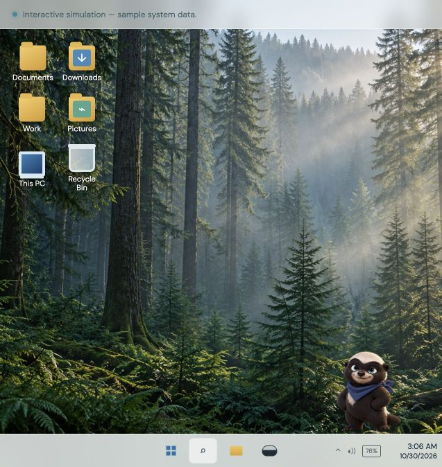
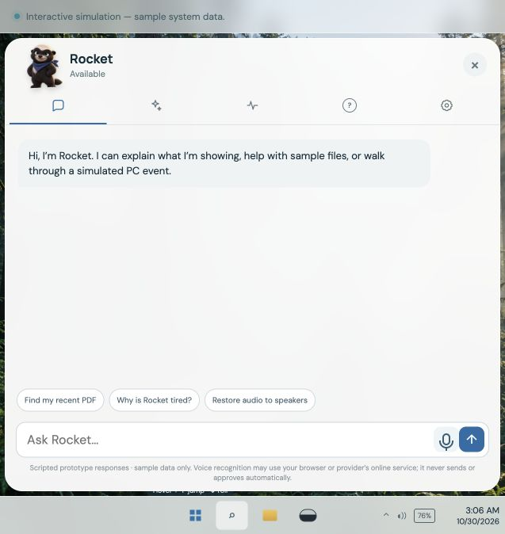

A file is somewhere on the computer, but the user cannot remember its location.
Independent product concept · Interactive prototype
DeskBuddy
Designing a Windows AI companion that acts within your boundaries—making routine PC care easier to understand while keeping automation visible and controllable.
Browser-based interactive simulation using sample system data. It does not maintain or modify your computer.

The starting point
Helpful without becoming intrusive.
What if a companion could notice routine desktop problems and explain them without technical jargon?
The concept began with file finding, system guidance, and automatic housekeeping. It quickly surfaced a more important question: how does the user know what a friendly assistant is allowed to do?
How might we make proactive system assistance understandable and controllable without adding another source of interruption?
The PC feels slow, but the system offers no understandable explanation.
Routine maintenance requires navigating unfamiliar settings.
Audio switches to Bluetooth headphones unexpectedly, making speakers seem broken.
Automatic actions happen without a clear account of what changed.
Evidence boundary: these are design hypotheses and scenarios, not findings from a completed interview study.
Audience & scope
Test the interaction before the native system.
The intended starting audience is everyday Windows users, with India as the initial market direction. Windows provides familiar desktop, folder, taskbar, and system vocabulary; market share was not independently measured for this project.
The first release is a browser simulation focused on three core tasks: finding a sample file, understanding a simulated slowdown, and reviewing temporary-file cleanup.
Interactive browser prototype
- Onboarding and permission setup
- Desktop companion interaction
- Scripted activity and scenario flows
System conditions & actions
- Sample file search
- Slowdown and low-battery states
- Cleanup and audio-output changes
Native validation & integration
- Actual Windows measurements
- Narrowly scoped maintenance
- Formal usability research
Define
Make autonomy explicit.
A single “allow everything” choice creates uncertainty. Repeated prompts for routine work undermine the purpose of automation.
The proposed model starts with a permission preference, then lets the user configure each task independently.
| Permission | Expected behaviour | Boundary |
|---|---|---|
| Automatic | Perform an enabled task within its saved scope and schedule. | Only for the specific enabled routine. |
| Ask first | Explain the proposed action and wait for approval. | No action before an explicit choice. |
| Disabled | Do not perform the task. | The routine remains off. |
Separate consequential actions
Checking for an update does not grant permission to install it. Enabling updates never implicitly approves a restart.
Keep the rule consistent
The same boundary should apply whether an action begins from a routine, a chat request, or a scripted demo scenario.
Develop
Let the desktop remain the desktop.
An early direction used a large greeting and always-visible scenario panel. The design moved toward a quieter Windows-style environment: pine-forest wallpaper, familiar folders, a taskbar, and Rocket.
Clicking Rocket reveals Chat, Try a Scenario, Activity, Understand Buddy, and Settings. This gives assistance a discoverable home while keeping controls out of the default desktop view.
A calmer way to care for your PC
Meet the helpful little presence on your desktop.
The prototype introduces the simulation, explains the limits, and lets the user name the companion. Rocket is the default.
Name your Buddy
Rocket
Rocket


Whether the quieter desktop improves discoverability without becoming distracting remains a usability-testing question.
Experience walkthrough
From agreement to visible action.
The flow makes the initial agreement reviewable, keeps playful character controls separate from maintenance approval, and records what a simulated action did.
01 · MeetIntroduce the simulation and name Rocket.
02 · Set boundariesChoose a starting permission and tune routines.
03 · Work togetherAsk for sample help or try a scripted scenario.
04 · InspectReview triggers, approvals, and outcomes.
Activity
Temporary-file cleanupCompleted
Software update availableApproval needed
Scheduled cleanupSkipped
Sample resultFreed 640 MB
“Freed 640 MB” communicates a specific sample storage outcome. It does not claim that the computer became faster.
Rocket as interface
Expression should support meaning—not replace it.
Rocket adds an approachable second communication channel. The “Understand Buddy” guide pairs each expression with a plain-language system explanation so users do not have to guess what an emotion means.
| Expression | Meaning | Supporting message or action |
|---|---|---|
| Tired or yawning | Long active session | Offer an optional break reminder. |
| Hungry or worried | Low battery | Explain that charging is needed. |
| Thinking | Processing a request | Show task status. |
| Cleaning | Running an approved routine | Explain the task. |
| Raised paw | Approval needed | Approve or skip. |
| Energetic or laughing | Simulated performance recovery | Describe the changed measurements. |
| Jumping or rolling | Playful interaction | No system-warning meaning. |
Low battery is a system condition, not a virtual-pet feeding task. Sound effects reinforce interaction; mute and volume controls keep them optional.
Concrete scenario
Where did the sound go?
When a simulated Bluetooth connection changes the output, Rocket explains what happened and asks before changing it back.
“Sound switched to Bluetooth headphones. Switch back to speakers?”
Switch to speakersKeep headphonesDisconnect
Restoring speaker output, keeping the headphones, and disconnecting them remain separate choices—important when the user may still need the headphone microphone.
AI in process & product
One label, several distinct roles.
The case study separates AI-assisted design and implementation from the product’s proposed intelligence. A connected general-purpose model is not confirmed by the available evidence.
| Layer | Documented role |
|---|---|
| AI-assisted design process | Explore requirements, refine scenarios, draft implementation instructions, and support prototype development. |
| Asset creation | AI-generated wallpaper and character artwork were part of the documented workflow. |
| Codex | Support implementation and iterative changes from design requirements. |
| Product AI concept | Understand requests, explain conditions, and propose supported actions. |
| Current prototype | Browser interactions with sample system data and scripted scenarios; a connected general-purpose model is not confirmed. |
Iteration through review
Turn visible problems into specific changes.
The prototype evolved through visual inspection and hands-on feedback. These are documented review requests—not proof that every fix has passed independent verification.
| Observed issue or request | Design response |
|---|---|
| Flat character did not match the direction. | Move toward a dimensional cartoon honey badger. |
| Character occupied too much desktop space. | Request a smaller scale. |
| Poses were clipped and adjacent artwork appeared. | Specify frame isolation and animation-boundary fixes. |
| Generic background did not feel like a desktop. | Add pine-forest wallpaper and familiar folders. |
| Sound was difficult to hear. | Adjust volume and request distinct jump/roll feedback. |
| Companion felt impersonal. | Add the default name Rocket and a rename option. |
The creator confirmed sound worked after an initial fix. Subsequent sound adjustments and other implementation details should still be checked in the deployed build.
What the prototype shows
Concrete concept. Open questions.
The deployment gives the idea a tangible form and creates something people can inspect. It does not convert scripted system data into evidence of real performance or trust.
Demonstrated in the prototype
- Onboarding and permission review
- Task-specific routine settings
- A desktop-companion interaction direction
- Scripted status, approval, and activity states
Not established
- Real storage savings or faster PC performance
- Reduced support demand
- Improved user trust
- Formal usability outcomes
- Native Windows maintenance
Proposed next validation
Ask Windows users to enable automatic cleanup, require approval for updates, interpret a low-battery expression, restore speaker output, inspect history, and pause automation. Measure task completion, permission comprehension, confidence in interpreting Rocket, and perceived distraction. Observe longer sessions to learn whether movement and sounds remain welcome.
Next steps
Move from simulation to evidence.
The concept should earn more autonomy only through clear scope, explicit permission, and validation.
Explore the prototype
Meet Rocket. Set the boundaries.
Start with permissions, then try cleanup, an audio-output change, and a low-battery event. Use Activity to inspect outcomes and Understand Buddy to explore expression meanings.
Interactive simulation using sample system data. It does not maintain or modify your computer.